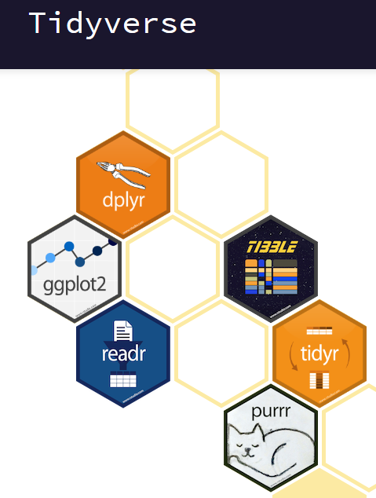

Manipulating data with tidyr
Learning Objectives
- Describe what a tibble is and how it differs from a data frame.
- Describe what the
tidyrpackage in R is used for. - Apply commonn
tidyrfunctions to tidy data in R. - Describe what the
dplyrpackage in R is used for. - Apply common
dplyrfunctions to manipulate data in R. - Employ the ‘pipe’ operator to link together a sequence of functions.
- Employ the ‘split-apply-combine’ concept to split the data into groups, apply analysis to each group, and combine the results.

The tidyverse is an opinionated collection of R packages designed for data science. All packages share an underlying design philosophy, grammar, and data structures. These packages include:
dplyrfor data manipulationtibblefor data organizingggplot2for data visualizationtidyrfor tidy-ing your datareadrfor reading data into R
When we installed the tidyverse package, we installed all of the above packages. This means that all of the specialized functions of these packages are available to use.
Tibbles
Tibbles are a modern take on data frames. They keep the features that have stood the test of time and drop the features that used to be convenient but are now frustrating (ie. converting character vectors to factors).
Create a tibble
You can create a tibble using the tibble() function:
# Create
friends_data <- tibble(
name = c("Nicolas", "Thierry", "Bernard", "Jerome"),
age = c(27, 25, 29, 26),
height = c(180, 170, 185, 169),
married = c(TRUE, FALSE, TRUE, TRUE)
)
# Print
friends_data## # A tibble: 4 x 4
## name age height married
## <chr> <dbl> <dbl> <lgl>
## 1 Nicolas 27 180 TRUE
## 2 Thierry 25 170 FALSE
## 3 Bernard 29 185 TRUE
## 4 Jerome 26 169 TRUEReading in tibbles
Tibbles can be read into R using the read_csv() function. Note that the read_csv() function is different than the read.csv() function. The major difference is that read_csv() will store the data as a tibble and read.csv() will store the data as a data frame.
EXERCISE
Use the read_csv() function to read in the Ecoli_metadata.csv file. Assign the data to an object called metadata2 to avoid writing over the object metadata.
How is it different that the metadataobject?
Data frames versus tibbles
For some applications, you will need to use data frames and for others tibbles. You will find that some older functions don’t work on tibbles. They can be easily converted using the functions as.data.frame() or as_tibble():
head(metadata)## sample generation clade strain cit run genome_size
## 1 REL606 0 N/A REL606 unknown 4.62
## 2 REL1166A 2000 unknown REL606 unknown SRR098028 4.63
## 3 ZDB409 5000 unknown REL606 unknown SRR098281 4.60
## 4 ZDB429 10000 UC REL606 unknown SRR098282 4.59
## 5 ZDB446 15000 UC REL606 unknown SRR098283 4.66
## 6 ZDB458 20000 (C1,C2) REL606 unknown SRR098284 4.63metadata_tib <- as_tibble(metadata)
metadata_tib## # A tibble: 30 x 7
## sample generation clade strain cit run genome_size
## <fct> <int> <fct> <fct> <fct> <fct> <dbl>
## 1 REL606 0 N/A REL606 unknown "" 4.62
## 2 REL1166A 2000 unknown REL606 unknown SRR098028 4.63
## 3 ZDB409 5000 unknown REL606 unknown SRR098281 4.6
## 4 ZDB429 10000 UC REL606 unknown SRR098282 4.59
## 5 ZDB446 15000 UC REL606 unknown SRR098283 4.66
## 6 ZDB458 20000 (C1,C2) REL606 unknown SRR098284 4.63
## 7 ZDB464* 20000 (C1,C2) REL606 unknown SRR098285 4.62
## 8 ZDB467 20000 (C1,C2) REL606 unknown SRR098286 4.61
## 9 ZDB477 25000 C1 REL606 unknown SRR098287 4.65
## 10 ZDB483 25000 C3 REL606 unknown SRR098288 4.59
## # … with 20 more rowsmetadata_df <- as.data.frame(metadata_tib)
head(metadata_df)## sample generation clade strain cit run genome_size
## 1 REL606 0 N/A REL606 unknown 4.62
## 2 REL1166A 2000 unknown REL606 unknown SRR098028 4.63
## 3 ZDB409 5000 unknown REL606 unknown SRR098281 4.60
## 4 ZDB429 10000 UC REL606 unknown SRR098282 4.59
## 5 ZDB446 15000 UC REL606 unknown SRR098283 4.66
## 6 ZDB458 20000 (C1,C2) REL606 unknown SRR098284 4.63As you will see in the following sections, many of the useful data frame functions are the same for tibbles.
Exploring tibbles
We can explore the contents of a tibble in several ways. By typing the name of the tibble in the console, we can view the first ten rows of a tibble as above, which tells us lots of information about the column types and the number of rows. We can also use the glimpse() function:
glimpse(metadata_tib)## Observations: 30
## Variables: 7
## $ sample <fct> REL606, REL1166A, ZDB409, ZDB429, ZDB446, ZDB458, ZD…
## $ generation <int> 0, 2000, 5000, 10000, 15000, 20000, 20000, 20000, 25…
## $ clade <fct> "N/A", "unknown", "unknown", "UC", "UC", "(C1,C2)", …
## $ strain <fct> REL606, REL606, REL606, REL606, REL606, REL606, REL6…
## $ cit <fct> unknown, unknown, unknown, unknown, unknown, unknown…
## $ run <fct> , SRR098028, SRR098281, SRR098282, SRR098283, SRR098…
## $ genome_size <dbl> 4.62, 4.63, 4.60, 4.59, 4.66, 4.63, 4.62, 4.61, 4.65…As with data frames, we can return a vector containing the values of a variable (column) using the $ sign:
metadata_tib$generation## [1] 0 2000 5000 10000 15000 20000 20000 20000 25000 25000 30000
## [12] 30000 31500 31500 31500 32000 32000 32500 32500 33000 33000 33000
## [23] 34000 34000 36000 36000 38000 38000 40000 40000Again, similar to data frames, we can use the subsetting operator [] directly on tibbles. A tibble is two-dimensional, so we must pass two arguments to the [] operator; the first indicates the row(s) we require and the second indicates the column(s). To return the value in row 10, column 1:
metadata_tib[10,1]## # A tibble: 1 x 1
## sample
## <fct>
## 1 ZDB483Similarly, to return the values in rows 25 to 30, and columns 1 to 3:
metadata_tib[25:30, 1:3]If we leave an index blank, this acts as a wildcard and matches all of the rows or columns:
metadata_tib[22,]## # A tibble: 1 x 7
## sample generation clade strain cit run genome_size
## <fct> <int> <fct> <fct> <fct> <fct> <dbl>
## 1 CZB154 33000 Cit+ REL606 plus SRR098026 4.76metadata_tib[,1:3]## # A tibble: 30 x 3
## sample generation clade
## <fct> <int> <fct>
## 1 REL606 0 N/A
## 2 REL1166A 2000 unknown
## 3 ZDB409 5000 unknown
## 4 ZDB429 10000 UC
## 5 ZDB446 15000 UC
## 6 ZDB458 20000 (C1,C2)
## 7 ZDB464* 20000 (C1,C2)
## 8 ZDB467 20000 (C1,C2)
## 9 ZDB477 25000 C1
## 10 ZDB483 25000 C3
## # … with 20 more rowsYou can also refer to columns by name with quotation marks:
metadata_tib[,"sample"]## # A tibble: 30 x 1
## sample
## <fct>
## 1 REL606
## 2 REL1166A
## 3 ZDB409
## 4 ZDB429
## 5 ZDB446
## 6 ZDB458
## 7 ZDB464*
## 8 ZDB467
## 9 ZDB477
## 10 ZDB483
## # … with 20 more rowsNote that subsetting a tibble using the [] method returns another tibble. In contrast, using the $ sign to extract a variable returns a vector:
metadata_tib$sample## [1] REL606 REL1166A ZDB409 ZDB429 ZDB446 ZDB458 ZDB464*
## [8] ZDB467 ZDB477 ZDB483 ZDB16 ZDB357 ZDB199* ZDB200
## [15] ZDB564 ZDB30* ZDB172 ZDB158 ZDB143 CZB199 CZB152
## [22] CZB154 ZDB83 ZDB87 ZDB96 ZDB99 ZDB107 ZDB111
## [29] REL10979 REL10988
## 30 Levels: CZB152 CZB154 CZB199 REL10979 REL10988 REL1166A ... ZDB99For more information on tibbles see the tibbles vignette.
Tidy data
Tudy data is data that’s easy to work with: it’s easy to manage (with dplyr), visualize (with ggplot2) and model (with R’s hundreds of modeling packages). Most importantly, tidy data is data where each column is a variable and each row is an observation.
Arranging your data in this way makes it easier to work with because you have a consistent way of referring to variables (as column names) and observations (as row indices). When use tidy data and tidy tools, you spend less time worrying about how to feed the output from one function into the input of another, and more time answering your questions about the data.
To tidy messy data, you first identify the variables in your dataset, then use the tools provided by tidyr to move them into columns. tidyr provides three main functions for tidying your messy data:
gather()separate()spread()
gather()

The gather() function takes multiple columns, and gathers them into key-value pairs: it makes “wide” data longer. Here’s an example. In this experiment we’ve given three people two different drugs and recorded their heart rate:
messy <- data.frame(
name = c("Wilbur", "Petunia", "Gregory"),
a = c(67, 80, 64),
b = c(56, 90, 50)
)
messy## name a b
## 1 Wilbur 67 56
## 2 Petunia 80 90
## 3 Gregory 64 50We have three variables (name, drug and heartrate), but only name is currently in a column. We use gather() to gather the a and b columns into key-value pairs of drug and heartrate:
messy %>%
gather(drug, heartrate, a:b)## name drug heartrate
## 1 Wilbur a 67
## 2 Petunia a 80
## 3 Gregory a 64
## 4 Wilbur b 56
## 5 Petunia b 90
## 6 Gregory b 50Now each column is a variable and each row is an observation - tidy! Note: more about the “pipe” operator later.
separate()
Sometimes two variables are clumped together in one column. separate() allows you to tease them apart. We have some measurements of how much time people spend on their phones, measured at two locations (work and home), at two times. Each person has been randomly assigned to either treatment or control.
messy## id trt work.T1 home.T1 work.T2 home.T2
## 1 1 treatment 0.08513597 0.6158293 0.1135090 0.05190332
## 2 2 control 0.22543662 0.4296715 0.5959253 0.26417767
## 3 3 control 0.27453052 0.6516557 0.3580500 0.39879073
## 4 4 treatment 0.27230507 0.5677378 0.4288094 0.83613414To tidy this data, we first use gather() to turn columns work.T1, home.T1, work.T2 and home.T2 into a key-value pair of key and time:
tidier <- messy %>%
gather(key, time, -id, -trt)
tidier## id trt key time
## 1 1 treatment work.T1 0.08513597
## 2 2 control work.T1 0.22543662
## 3 3 control work.T1 0.27453052
## 4 4 treatment work.T1 0.27230507
## 5 1 treatment home.T1 0.61582931
## 6 2 control home.T1 0.42967153
## 7 3 control home.T1 0.65165567
## 8 4 treatment home.T1 0.56773775
## 9 1 treatment work.T2 0.11350898
## 10 2 control work.T2 0.59592531
## 11 3 control work.T2 0.35804998
## 12 4 treatment work.T2 0.42880942
## 13 1 treatment home.T2 0.05190332
## 14 2 control home.T2 0.26417767
## 15 3 control home.T2 0.39879073
## 16 4 treatment home.T2 0.83613414Next we use separate() to split the key into location and time, using a regular expression to describe the character that separates them:
tidy <- tidier %>%
separate(key, into = c("location", "timepoint"), sep = "\\.")
tidy## id trt location timepoint time
## 1 1 treatment work T1 0.08513597
## 2 2 control work T1 0.22543662
## 3 3 control work T1 0.27453052
## 4 4 treatment work T1 0.27230507
## 5 1 treatment home T1 0.61582931
## 6 2 control home T1 0.42967153
## 7 3 control home T1 0.65165567
## 8 4 treatment home T1 0.56773775
## 9 1 treatment work T2 0.11350898
## 10 2 control work T2 0.59592531
## 11 3 control work T2 0.35804998
## 12 4 treatment work T2 0.42880942
## 13 1 treatment home T2 0.05190332
## 14 2 control home T2 0.26417767
## 15 3 control home T2 0.39879073
## 16 4 treatment home T2 0.83613414spread()
The function spread() does the reverse of gather(). It takes two columns and spreads them into multiple columns. It produces “wide” data from “long” data. Typically you will want your data in a wide form so you likely won’t use this much. See the documentation for more information.
What is dplyr?
The package dplyr is a package that tries to provide easy tools for the most common data manipulation tasks. It is built to work directly with tibbles. The thinking behind it was largely inspired by the package plyr which has been in use for some time but suffered from being slow in some cases. dplyr addresses this by porting much of the computation to C++. An additional feature is the ability to work with data stored directly in an external database. The benefits of doing this are that the data can be managed natively in a relational database, queries can be conducted on that database, and only the results of the query returned.
This addresses a common problem with R in that all operations are conducted in memory and thus the amount of data you can work with is limited by available memory. The database connections essentially remove that limitation in that you can have a database of many 100s GB, conduct queries on it directly and pull back just what you need for analysis in R.
Selecting columns and filtering rows
We’re going to learn some of the most common dplyr functions: select(), filter(), mutate(), group_by(), and summarize(). To select columns of a data frame, use select(). The first argument to this function is the data frame (tibble), and the subsequent arguments are the columns to keep.
select(metadata, sample, clade, cit, genome_size)## sample clade cit genome_size
## 1 REL606 N/A unknown 4.62
## 2 REL1166A unknown unknown 4.63
## 3 ZDB409 unknown unknown 4.60
## 4 ZDB429 UC unknown 4.59
## 5 ZDB446 UC unknown 4.66
## 6 ZDB458 (C1,C2) unknown 4.63
## 7 ZDB464* (C1,C2) unknown 4.62
## 8 ZDB467 (C1,C2) unknown 4.61
## 9 ZDB477 C1 unknown 4.65
## 10 ZDB483 C3 unknown 4.59
## 11 ZDB16 C1 unknown 4.61
## 12 ZDB357 C2 unknown 4.62
## 13 ZDB199* C1 minus 4.62
## 14 ZDB200 C2 minus 4.63
## 15 ZDB564 Cit+ plus 4.74
## 16 ZDB30* C3 minus 4.61
## 17 ZDB172 Cit+ plus 4.77
## 18 ZDB158 C2 minus 4.63
## 19 ZDB143 Cit+ plus 4.79
## 20 CZB199 C1 minus 4.59
## 21 CZB152 Cit+ plus 4.80
## 22 CZB154 Cit+ plus 4.76
## 23 ZDB83 Cit+ minus 4.60
## 24 ZDB87 C2 plus 4.75
## 25 ZDB96 Cit+ plus 4.74
## 26 ZDB99 C1 minus 4.61
## 27 ZDB107 Cit+ plus 4.79
## 28 ZDB111 C2 minus 4.62
## 29 REL10979 Cit+ plus 4.78
## 30 REL10988 C2 minus 4.62To choose rows, use filter():
filter(metadata, cit == "plus")## sample generation clade strain cit run genome_size
## 1 ZDB564 31500 Cit+ REL606 plus SRR098289 4.74
## 2 ZDB172 32000 Cit+ REL606 plus SRR098042 4.77
## 3 ZDB143 32500 Cit+ REL606 plus SRR098040 4.79
## 4 CZB152 33000 Cit+ REL606 plus SRR097977 4.80
## 5 CZB154 33000 Cit+ REL606 plus SRR098026 4.76
## 6 ZDB87 34000 C2 REL606 plus SRR098035 4.75
## 7 ZDB96 36000 Cit+ REL606 plus SRR098036 4.74
## 8 ZDB107 38000 Cit+ REL606 plus SRR098038 4.79
## 9 REL10979 40000 Cit+ REL606 plus SRR098029 4.78filter(metadata, cit != "plus")## sample generation clade strain cit run genome_size
## 1 REL606 0 N/A REL606 unknown 4.62
## 2 REL1166A 2000 unknown REL606 unknown SRR098028 4.63
## 3 ZDB409 5000 unknown REL606 unknown SRR098281 4.60
## 4 ZDB429 10000 UC REL606 unknown SRR098282 4.59
## 5 ZDB446 15000 UC REL606 unknown SRR098283 4.66
## 6 ZDB458 20000 (C1,C2) REL606 unknown SRR098284 4.63
## 7 ZDB464* 20000 (C1,C2) REL606 unknown SRR098285 4.62
## 8 ZDB467 20000 (C1,C2) REL606 unknown SRR098286 4.61
## 9 ZDB477 25000 C1 REL606 unknown SRR098287 4.65
## 10 ZDB483 25000 C3 REL606 unknown SRR098288 4.59
## 11 ZDB16 30000 C1 REL606 unknown SRR098031 4.61
## 12 ZDB357 30000 C2 REL606 unknown SRR098280 4.62
## 13 ZDB199* 31500 C1 REL606 minus SRR098044 4.62
## 14 ZDB200 31500 C2 REL606 minus SRR098279 4.63
## 15 ZDB30* 32000 C3 REL606 minus SRR098032 4.61
## 16 ZDB158 32500 C2 REL606 minus SRR098041 4.63
## 17 CZB199 33000 C1 REL606 minus SRR098027 4.59
## 18 ZDB83 34000 Cit+ REL606 minus SRR098034 4.60
## 19 ZDB99 36000 C1 REL606 minus SRR098037 4.61
## 20 ZDB111 38000 C2 REL606 minus SRR098039 4.62
## 21 REL10988 40000 C2 REL606 minus SRR098030 4.62Pipes
But what if you wanted to select and filter? There are three ways to do this: use intermediate steps, nested functions, or pipes. With the intermediate steps, you essentially create a temporary data frame and use that as input to the next function. This can clutter up your workspace with lots of objects. You can also nest functions (i.e. one function inside of another). This is handy, but can be difficult to read if too many functions are nested as the process from inside out. The last option, pipes, are a fairly recent addition to R. Pipes let you take the output of one function and send it directly to the next, which is useful when you need to many things to the same data set. Pipes in R look like %>% and are made available via the magrittr package installed as part of tidyverse. If you’re familiar with the Unix shell, you may already have used pipes to pass the output from one command to the next. The concept is the same, except the shell uses the | character rather than R’s pipe operator %>%.
The pipe operator can be tedious to type. In Rstudio pressing Ctrl + Shift + M under Windows / Linux will insert the pipe operator. On the mac, use ⌘ + Shift + M.
metadata %>%
filter(cit == "plus") %>%
select(sample, generation, clade, cit)## sample generation clade cit
## 1 ZDB564 31500 Cit+ plus
## 2 ZDB172 32000 Cit+ plus
## 3 ZDB143 32500 Cit+ plus
## 4 CZB152 33000 Cit+ plus
## 5 CZB154 33000 Cit+ plus
## 6 ZDB87 34000 C2 plus
## 7 ZDB96 36000 Cit+ plus
## 8 ZDB107 38000 Cit+ plus
## 9 REL10979 40000 Cit+ plusIn the above we use the pipe to send the data set first through filter, to keep rows where cit was equal to ‘plus’, and then through select to keep the sample and generation and clade columns. When the data frame is being passed to the filter() and select() functions through a pipe, we don’t need to include it as an argument to these functions anymore. Note that the order of operations here matters - try reversing the filter() and select() commands - why doesn’t that work?
This is the same as the nested version:
select(filter(metadata, cit == "plus"), sample, generation, clade)## sample generation clade
## 1 ZDB564 31500 Cit+
## 2 ZDB172 32000 Cit+
## 3 ZDB143 32500 Cit+
## 4 CZB152 33000 Cit+
## 5 CZB154 33000 Cit+
## 6 ZDB87 34000 C2
## 7 ZDB96 36000 Cit+
## 8 ZDB107 38000 Cit+
## 9 REL10979 40000 Cit+If we wanted to create a new object with this smaller version of the data we could do so by assigning it a new name:
Ecoli_citplus <- metadata %>%
filter(cit == "plus") %>%
select(sample, generation, clade)
Ecoli_citplus## sample generation clade
## 1 ZDB564 31500 Cit+
## 2 ZDB172 32000 Cit+
## 3 ZDB143 32500 Cit+
## 4 CZB152 33000 Cit+
## 5 CZB154 33000 Cit+
## 6 ZDB87 34000 C2
## 7 ZDB96 36000 Cit+
## 8 ZDB107 38000 Cit+
## 9 REL10979 40000 Cit+We can think of the filter() and select() functions as verbs in the sentence; they do things to the data flowing through the pipeline.
EXERCISE
Using pipes, subset metadata to include rows where the clade is ‘Cit+’ and keep only the columns sample, cit, and genome_size.
How many rows are in that tibble?
HINT: You can use the nrow() function to find out how many rows are in a tibble.
Mutate
Frequently you’ll want to create new columns based on the values in existing columns, for example to do unit conversions or find the ratio of values in two columns. For this we’ll use mutate().
To create a new column of genome size in bp:
metadata %>%
mutate(genome_bp = genome_size *1e6)## sample generation clade strain cit run genome_size
## 1 REL606 0 N/A REL606 unknown 4.62
## 2 REL1166A 2000 unknown REL606 unknown SRR098028 4.63
## 3 ZDB409 5000 unknown REL606 unknown SRR098281 4.60
## 4 ZDB429 10000 UC REL606 unknown SRR098282 4.59
## 5 ZDB446 15000 UC REL606 unknown SRR098283 4.66
## 6 ZDB458 20000 (C1,C2) REL606 unknown SRR098284 4.63
## 7 ZDB464* 20000 (C1,C2) REL606 unknown SRR098285 4.62
## 8 ZDB467 20000 (C1,C2) REL606 unknown SRR098286 4.61
## 9 ZDB477 25000 C1 REL606 unknown SRR098287 4.65
## 10 ZDB483 25000 C3 REL606 unknown SRR098288 4.59
## 11 ZDB16 30000 C1 REL606 unknown SRR098031 4.61
## 12 ZDB357 30000 C2 REL606 unknown SRR098280 4.62
## 13 ZDB199* 31500 C1 REL606 minus SRR098044 4.62
## 14 ZDB200 31500 C2 REL606 minus SRR098279 4.63
## 15 ZDB564 31500 Cit+ REL606 plus SRR098289 4.74
## 16 ZDB30* 32000 C3 REL606 minus SRR098032 4.61
## 17 ZDB172 32000 Cit+ REL606 plus SRR098042 4.77
## 18 ZDB158 32500 C2 REL606 minus SRR098041 4.63
## 19 ZDB143 32500 Cit+ REL606 plus SRR098040 4.79
## 20 CZB199 33000 C1 REL606 minus SRR098027 4.59
## 21 CZB152 33000 Cit+ REL606 plus SRR097977 4.80
## 22 CZB154 33000 Cit+ REL606 plus SRR098026 4.76
## 23 ZDB83 34000 Cit+ REL606 minus SRR098034 4.60
## 24 ZDB87 34000 C2 REL606 plus SRR098035 4.75
## 25 ZDB96 36000 Cit+ REL606 plus SRR098036 4.74
## 26 ZDB99 36000 C1 REL606 minus SRR098037 4.61
## 27 ZDB107 38000 Cit+ REL606 plus SRR098038 4.79
## 28 ZDB111 38000 C2 REL606 minus SRR098039 4.62
## 29 REL10979 40000 Cit+ REL606 plus SRR098029 4.78
## 30 REL10988 40000 C2 REL606 minus SRR098030 4.62
## genome_bp
## 1 4620000
## 2 4630000
## 3 4600000
## 4 4590000
## 5 4660000
## 6 4630000
## 7 4620000
## 8 4610000
## 9 4650000
## 10 4590000
## 11 4610000
## 12 4620000
## 13 4620000
## 14 4630000
## 15 4740000
## 16 4610000
## 17 4770000
## 18 4630000
## 19 4790000
## 20 4590000
## 21 4800000
## 22 4760000
## 23 4600000
## 24 4750000
## 25 4740000
## 26 4610000
## 27 4790000
## 28 4620000
## 29 4780000
## 30 4620000Split-apply-combine data analysis and the summarize() function
Many data analysis tasks can be approached using the “split-apply-combine” paradigm: split the data into groups, apply some analysis to each group, and then combine the results. dplyr makes this very easy through the use of the group_by() function, which splits the data into groups. When the data is grouped in this way summarize() can be used to collapse each group into a single-row summary. summarize() does this by applying an aggregating or summary function to each group. For example, if we wanted to group by citrate-using mutant status and find the number of rows of data for each status, we would do:
metadata %>%
group_by(cit) %>%
summarize(n())## # A tibble: 3 x 2
## cit `n()`
## <fct> <int>
## 1 minus 9
## 2 plus 9
## 3 unknown 12Here the summary function used was n() to find the count for each group. We can also apply many other functions to individual columns to get other summary statistics. For example, in the R base package we can use built-in functions like mean, median, min, and max. By default, all R functions operating on vectors that contains missing data will return NA. It’s a way to make sure that users know they have missing data, and make a conscious decision on how to deal with it. When dealing with simple statistics like the mean, the easiest way to ignore NA (the missing data) is to use na.rm=TRUE (rm stands for remove).
So to view mean genome_size by mutant status:
metadata %>%
group_by(cit) %>%
summarize(mean_size = mean(genome_size, na.rm = TRUE))## # A tibble: 3 x 2
## cit mean_size
## <fct> <dbl>
## 1 minus 4.61
## 2 plus 4.77
## 3 unknown 4.62You can group by multiple columns too:
metadata %>%
group_by(cit, clade) %>%
summarize(mean_size = mean(genome_size, na.rm = TRUE))## # A tibble: 13 x 3
## # Groups: cit [3]
## cit clade mean_size
## <fct> <fct> <dbl>
## 1 minus C1 4.61
## 2 minus C2 4.62
## 3 minus C3 4.61
## 4 minus Cit+ 4.6
## 5 plus C2 4.75
## 6 plus Cit+ 4.77
## 7 unknown (C1,C2) 4.62
## 8 unknown C1 4.63
## 9 unknown C2 4.62
## 10 unknown C3 4.59
## 11 unknown N/A 4.62
## 12 unknown UC 4.62
## 13 unknown unknown 4.62Looks like for one of these clones, the clade is missing. We could then discard those rows using filter():
metadata %>%
group_by(cit, clade) %>%
summarize(mean_size = mean(genome_size, na.rm = TRUE)) %>%
filter(!is.na(clade))## # A tibble: 13 x 3
## # Groups: cit [3]
## cit clade mean_size
## <fct> <fct> <dbl>
## 1 minus C1 4.61
## 2 minus C2 4.62
## 3 minus C3 4.61
## 4 minus Cit+ 4.6
## 5 plus C2 4.75
## 6 plus Cit+ 4.77
## 7 unknown (C1,C2) 4.62
## 8 unknown C1 4.63
## 9 unknown C2 4.62
## 10 unknown C3 4.59
## 11 unknown N/A 4.62
## 12 unknown UC 4.62
## 13 unknown unknown 4.62You can also summarize multiple variables at the same time:
metadata %>%
group_by(cit, clade) %>%
summarize(mean_size = mean(genome_size, na.rm = TRUE),
min_generation = min(generation))## # A tibble: 13 x 4
## # Groups: cit [3]
## cit clade mean_size min_generation
## <fct> <fct> <dbl> <int>
## 1 minus C1 4.61 31500
## 2 minus C2 4.62 31500
## 3 minus C3 4.61 32000
## 4 minus Cit+ 4.6 34000
## 5 plus C2 4.75 34000
## 6 plus Cit+ 4.77 31500
## 7 unknown (C1,C2) 4.62 20000
## 8 unknown C1 4.63 25000
## 9 unknown C2 4.62 30000
## 10 unknown C3 4.59 25000
## 11 unknown N/A 4.62 0
## 12 unknown UC 4.62 10000
## 13 unknown unknown 4.62 2000For an efficient (and printable) summary of the tidyr and dplyr functions, see this Handy dplyr cheatsheet.
EXERCISE
Create a tibble containing each unique clade (removing the samples with unknown clades) and the rank of it’s mean genome size. (note that ranking genome size will not sort the table; the row order will be unchanged. You can use the arrange() function to sort the table).
There are several functions for ranking observations, which handle tied values differently. For this exercise it doesn’t matter which function you choose. Use the help options to find a ranking function.
Other great resources
- Data Wrangling tutorial - an excellent four part tutorial covering selecting data, filtering data, summarising and transforming your data.
- R for Data Science
- Data wrangling with R and RStudio - 55 minute webinar from RStudio